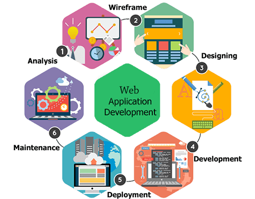
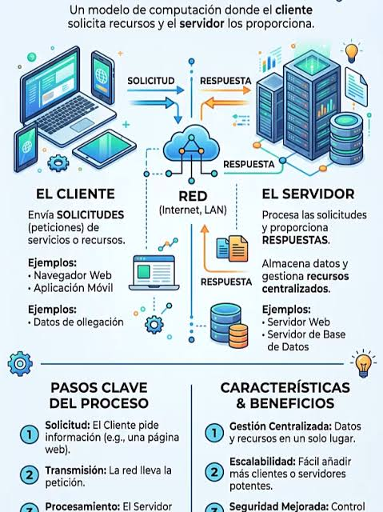

Comprende quién recibe la petición, quién genera el contenido y dónde se guardan los
resultados.
1. El proceso de crear una aplicación web
Una aplicación web pasa por distintas fases: entender una necesidad, diseñar una solución,
programarla, ponerla en funcionamiento y mantenerla. El despliegue forma parte de ese ciclo:
conecta el código desarrollado con el entorno en el que lo utilizarán las personas.

El desarrollo es un ciclo: después de publicar una versión, el uso y el mantenimiento
generan nuevas necesidades y mejoras.
Análisis y planificación: identificar a los usuarios, el problema que queremos
resolver, los requisitos y el alcance.
Estructura y prototipo: organizar la información, las pantallas y la navegación
para comprobar cómo se utilizará la aplicación.
Diseño de la interfaz: definir la presentación visual y la interacción,
teniendo en cuenta la accesibilidad y los distintos dispositivos.
Programación y pruebas: implementar las funcionalidades y comprobar que
cumplen los requisitos. Las pruebas también acompañan las demás fases.
Despliegue: preparar el entorno, instalar servicios y dependencias,
configurar la aplicación y sus datos y verificar que se puede utilizar.
Mantenimiento y evolución: observar el funcionamiento, corregir errores,
actualizar componentes y desplegar nuevas versiones.
Dónde estamos nosotros
Del código proporcionado a una aplicación que funciona
En este módulo nos centramos en la fase 5: el despliegue, y en las tareas de
comprobación y mantenimiento relacionadas. Recibiréis parte del código del proyecto y podréis
personalizarlo; vuestra responsabilidad será preparar los servicios, configurar las conexiones,
probar el resultado y documentar el proceso.
También analizaremos requisitos y arquitectura para decidir qué necesita cada funcionalidad.
Empezaremos con el portal estático e incorporaremos ejecución en servidor, base de datos y
otros servicios de forma progresiva.
Desplegar no significa necesariamente publicar por primera vez en Internet: también podemos
desplegar en un entorno local de pruebas, en una red interna o actualizar una versión existente.
2. Fase de despliegue
El despliegue de aplicaciones web es la acción que se conoce como presentar o hacer pública por
primera
vez una aplicación o página web a través de determinadas herramientas. Este término proviene del inglés
con la palabra “deploy”.
En palabras sencillas, es el proceso de publicar tu aplicación en internet o en un sistema corporativo
para que la gente realmente pueda usarla. Mientras programas, la aplicación solo existe en tu máquina;
al desplegarla, se "muda" a un servidor público.
El despliegue de aplicaciones se refiere, por tanto, a trabajar con todo el código y las configuraciones
de la aplicación en un ordenador específico al que cualquiera pueda conectarse sin importar el lugar.
Esta tarea se puede realizar utilizando un servidor físico que está on-line y que se encuentra en
nuestras oficinas, o buscando soluciones en la nube utilizando servidores como AWS o Azure. Además, la
implementación deberá realizarse utilizando las herramientas, según el lenguaje de
programación que se empleó para desarrollar la aplicación.
Nuestra plataforma publicará actividades y clasificaciones. Debemos decidir quién prepara esa
información, dónde se conserva y cómo llega al navegador.
El recuadro señalado sitúa las tareas de despliegue dentro del proceso de implantación.
Pulsa para ampliar.
Configuración del entorno: Preparar los servidores virtuales o físicos (en la nube o
locales)
con el sistema operativo y las bases de datos correctas.
Instalación de dependencias: Descargar todas las herramientas, librerías y
componentes
adicionales que la aplicación necesita para funcionar.
Pruebas finales: Verificar en el servidor que todo responda de manera estable, segura
y sin
interrupciones.
Asignación de dominio: Conectar el servidor a una URL real (como miaplicacion.com)
para que
los usuarios puedan acceder a la aplicación web desplegada.
El recuadro Implementación de despliegue reúne la preparación del entorno,
la instalación, la configuración y la integración de componentes. En nuestro proyecto iremos
realizando estas tareas a medida que incorporemos nuevos servicios y funcionalidades.
4. Arquitectura cliente-servidor: del navegador al servidor

El cliente solicita recursos y el servidor responde a través de la red.
En nuestro proyecto, el navegador se comunicará con el servidor web.
En AEA1 estudiamos el modelo cliente-servidor, uno de los fundamentos del funcionamiento
de las aplicaciones web. Ahora recuperamos este concepto para entender qué ocurre cuando accedemos a una
página web y cómo intervienen los distintos componentes durante el despliegue de una aplicación.
¿Quién es el cliente y quién es el servidor?
En una arquitectura cliente-servidor distinguimos dos roles principales:
Cliente: es quien solicita un recurso o servicio. Por ejemplo, cuando escribimos
una dirección web o pulsamos un botón, el navegador puede enviar una petición HTTP al servidor. El
navegador también se encarga de interpretar el HTML y el CSS y ejecutar el JavaScript que recibe.
Servidor: es quien recibe las peticiones, las procesa y devuelve una respuesta. Por
ejemplo, puede enviar una página HTML, proporcionar datos en formato JSON o gestionar una solicitud
de compra.
¿Un servidor es un programa o un ordenador?
La palabra servidor se utiliza habitualmente con dos significados diferentes:
Servidor como software: es un programa o proceso que ofrece un servicio y escucha
peticiones. Por ejemplo, Apache o Nginx pueden actuar como servidores web.
Servidor como máquina: es el ordenador físico o virtual donde se ejecutan uno o
varios de estos programas.
Esto significa que no necesitamos un ordenador diferente para cada servicio.
Por ejemplo, en un único ordenador podemos ejecutar:
Apache: atiende las peticiones web, normalmente en los puertos 80 (HTTP) y 443
(HTTPS).
MariaDB: gestiona la base de datos, normalmente en el puerto 3306.
Una aplicación Node.js: ejecuta la lógica de nuestra aplicación y puede escuchar,
por ejemplo, en el puerto 3000.
Los tres servicios pueden funcionar simultáneamente en la misma máquina, utilizando distintos puertos.
¿Todos los componentes deben estar en el mismo ordenador?
No. Una aplicación puede desplegarse de diferentes maneras.
En un entorno de desarrollo podemos tener el servidor web, la aplicación y la base de datos ejecutándose
en nuestro propio ordenador.
En un entorno de producción, estos componentes pueden distribuirse entre diferentes máquinas o servicios
en la nube. Incluso podemos tener varias máquinas ejecutando el mismo servicio para atender más
usuarios.
Idea clave
Cuando representamos una arquitectura mediante cajas y flechas, las cajas identifican componentes o
responsabilidades, pero no necesariamente ordenadores físicos diferentes.
Por tanto, debemos distinguir tres conceptos:
Máquina: dónde se ejecuta el software.
Servicio o proceso: qué programa realiza una función.
Puerto: por dónde se accede a un servicio de red dentro de una máquina.
Comprender esta diferencia nos ayudará a configurar, desplegar y diagnosticar nuestras aplicaciones
web.
5. Webs
Web estática
El servidor lee un archivo preparado y envía su contenido. La clasificación del primer portal
está
escrita en HTML: cambiar una victoria no recalcula puntos. Estática no significa que no pueda
contener
animaciones ni JavaScript.
Navegador --petición HTTP--> servidor web
Navegador <--respuesta HTTP-- servidor web
Ventajas: pocas dependencias, despliegue sencillo y poca generación de
contenido en el
servidor.
Limitaciones: actualización manual y ausencia de persistencia compartida
proporcionada por el servidor.
Web dinámica
El servidor ejecuta código para construir la respuesta. PHP puede consultar MariaDB, calcular la
clasificación y generar HTML. El navegador recibe el resultado, no el código PHP. También
existen
modelos donde JavaScript consulta una API.
Navegador → Apache + PHP → MariaDB
Navegador ← HTML generado ← datos consultados
Ventajas: datos compartidos, reglas y actualizaciones centralizadas.
Costes: más configuración, credenciales, errores de conexión y componentes que
mantener.
6. Capas lógicas
Las capas lógicas de una aplicación web son la forma en que se organiza el
código y las responsabilidades del software para que sea escalable, mantenible y seguro.
En la arquitectura tradicional y más utilizada (la arquitectura de tres capas), una
aplicación web se divide en los siguientes niveles:
1. Capa de Presentación (Front-end)
Es la interfaz con la que interactúa el usuario directamente. Su objetivo principal es mostrar
los datos y capturar las acciones del usuario.
Componentes: HTML, CSS, JavaScript, y frameworks como React, Angular o Vue.
Función: Renderiza las pantallas, valida datos básicos en los formularios (como que
un correo tenga una "@") y envía las peticiones del usuario hacia el servidor.
2. Capa de Negocio o Aplicación (Back-end)
Es el "cerebro" de la aplicación. Aquí se procesa la información y se aplican las reglas de
negocio que definen cómo funciona la aplicación.
Componentes: Servidores web (Node.js, Django, Spring Boot, .NET) y APIs.
Función: Recibe las peticiones del front-end, verifica la identidad del usuario
(autenticación), realiza cálculos, toma decisiones lógicas y decide qué información pedir o guardar
en la base de datos.
3. Capa de Datos (Persistencia)
Es el lugar donde la información se almacena de forma permanente.
Componentes: Bases de datos relacionales (PostgreSQL, MySQL) o no relacionales
(MongoDB), y sistemas de almacenamiento de archivos.
Función: Recibe órdenes de la capa de negocio para guardar, actualizar, borrar o
consultar registros, asegurando que la información no se pierda al cerrar la aplicación.
Ejemplo del recorrido de una compra. El esquema muestra por separado al cliente
y la presentación; en la explicación de tres capas, la interfaz que utiliza el cliente
corresponde a la capa de presentación. Pulsa la imagen para ampliar.
Del análisis al caso práctico
Ahora que conoces los componentes de una arquitectura web, descubre qué necesita el cliente y cómo desplegaremos su proyecto.